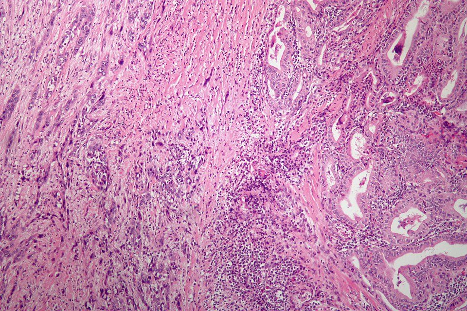

General information only. It does not replace advice from your care team and should not be used to choose a treatment.


At a glance
| How common | Under 2% of thyroid cancers |
| Who | Over-60s, often with goitre or a previous differentiated cancer |
| Presentation | A neck mass growing over days or weeks, with hoarseness, difficulty swallowing or breathing |
| Key alteration | BRAF V600E in 40-45% |
| Treatment | Urgent: dabrafenib and trametinib if BRAF; surgery, radiotherapy, immunotherapy |
What it is
It is an undifferentiated tumour that usually arises from the transformation of a papillary or follicular cancer. All are considered stage IV. It is an oncological emergency: diagnosis (including BRAF testing) should be done within days, in an expert centre.
Treatment
- With a BRAF V600E mutation: dabrafenib with trametinib, with rapid responses that sometimes allow later surgery (MD Anderson neoadjuvant strategy), often together with pembrolizumab.
- If operable from the start: thyroidectomy followed by chemoradiotherapy.
- Other alterations: selpercatinib (RET), larotrectinib (NTRK), lenvatinib; immunotherapy.
- Airway protection, early palliative care.
Outlook
Historically median survival was 3-6 months; with targeted therapy and immunotherapy, some patients with BRAF live more than two years.
See also: Thyroid cancer, Targeted therapy.
History · Medicapedia
Anaplastic thyroid cancer in the history of medicine
How it was discovered, who studied it and how its treatment changed over the centuries, told on Medicapedia, our sister site on the history of medicine.
Read the history on Medicapedia ↗Sources
- Bible KC, et al. 2021 American Thyroid Association guidelines for management of patients with anaplastic thyroid cancer. Thyroid. 2021;31:337-386. doi:10.1089/thy.2020.0944
- Subbiah V, et al. Dabrafenib and trametinib treatment in patients with locally advanced or metastatic BRAF V600-mutant anaplastic thyroid cancer. J Clin Oncol. 2018;36:7-13. doi:10.1200/JCO.2017.73.6785